Comment utiliser EtreCheck
EtreCheck est souvent recommandé sur les forums de discussion sur Internet comme Apple Support Communities. EtreCheck a été conçu pour fournir aux membres d’Apple Support Communities le type d’information dont ils ont besoin quand ils vous aident avec votre Mac. Mais vous pouvez exécuter EtreCheck et lire le rapport vous-même. Ce qui suit est une explication de la façon d’utiliser EtreCheck et la signification de chaque section d’un rapport EtreCheck.
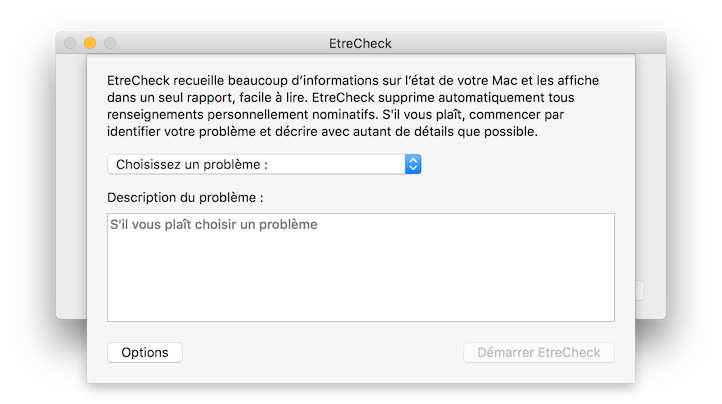 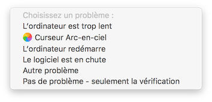Quand vous lancez EtreCheck pour la première fois, vous devez choisir un problème qui bien décrit vos circonstances. Vous devez aussi inclure tout autre détail que possible dans la description du problème.
Vous pouvez cliquer sur le bouton Options pour engager plus des diagnostics. Cet aspect est avancé et ne doit pas être utilisé avec un rapport EtreCheck visé à l’internet.
Enfin, cliquer sur le bouton Démarrer EtreCheck pour créer votre rapport EtreCheck.
Ce qui suit est une brève description de chaque section dans le rapport. Pas toutes les sections peuvent être présentes. Tous les éléments en rouge nécessitent peut-être votre attention. Rechercher des liens dans tout le rapport de soutien pour les logiciels de tiers, des détails supplémentaires, et les dates qui peuvent correspondre au début d'un problème particulier.
Lorsque le rapport EtreCheck est terminé, vous pouvez le partager en le copiant dans le presse-papiers. S’il vous plaît, rappelez-vous que Etresoft, Inc. ne peut pas garantir l’exactitude de toutes les suggestions que vous pouvez recevoir sur un forum de discussion sur Internet.
-
Entête :
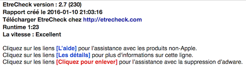 Cette section contient des informations de base sur EtreCheck lui-même, l’heure de l’exécution, et le temps EtreCheck a pris pour courir. On omit parfois cette section, mais il peut être très utile comme une estimation approximative des performances de votre machine. Si EtreCheck prend plus de 5 minutes à courir, vous avez des problèmes.
Cette section explique également que le rapport EtreCheck est un document hypertexte. Vous pouvez cliquer sur quasiment toutes les parties du rapport pour plus de détails. -
Problème :
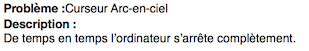 C’est le problème que vous avez décrit quand vous avez lancé EtreCheck. -
Informations matérielles :
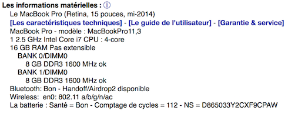 Informations de base à propos de votre machine - le nombre de processeurs, les cœurs, et la mémoire vive. Cette section se connecte aux serveurs de l’assistance d’Apple pour retourner le "nom commercial" de votre machine qu’Apple utilise. Cette section comprend également des liens vers des ressources de l’assistance Apple pour votre machine, tels que les spécifications techniques, guides d’utilisation, la garantie et le service, et les instructions de mise à niveau de la mémoire vive. -
Informations video :
Votre carte graphique et tous les écrans liés. -
Logiciel du système :
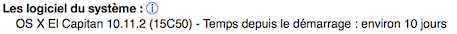 La version de votre système d’exploitation, y compris la version précise de construction. Il indique également le temps depuis que votre machine s’est redémarrée. Les résultats d’EtreCheck seront plus utiles si vous l’exécutez avant de redémarrer. Il devrait attendre un peu afin que votre machine puisse traverser le problème que vous fait souhaitez exécuter EtreCheck. -
Informations des disques :
 Cela peut inclure plusieurs volumes cachés utilisés pour le démarrage et la récupération. Cette section peut déclarer un faible espace disque, les erreurs de disque, ou de défaillances SMART. Si votre rapport énumère les erreurs de disque ou de défaillances SMART, vous avez probablement besoin de remplacer votre disque dur. L’Utilitaire de disque ne peut pas réparer ces erreurs.
Cela peut inclure plusieurs volumes cachés utilisés pour le démarrage et la récupération. Cette section peut déclarer un faible espace disque, les erreurs de disque, ou de défaillances SMART. Si votre rapport énumère les erreurs de disque ou de défaillances SMART, vous avez probablement besoin de remplacer votre disque dur. L’Utilitaire de disque ne peut pas réparer ces erreurs.
-
Informations USB/Thunderbolt/Firewire :
Tout périphérique USB, Thunderbolt, ou FireWire, tels que les disques durs externes. -
Fichiers de configuration :
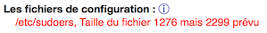 Cette section identifie les modifications à vos fichiers de configuration du système qui sont hors d’habitude. Ce n’est pas nécessairement un problème si vous reconnaissez ces fichiers et savez la raison pour ces changements. -
Gatekeeper :
 Vos paramètres de Gatekeeper actuelles. Cela devrait être réglé sur «Mac App Store et de développeurs identifiés».
Vos paramètres de Gatekeeper actuelles. Cela devrait être réglé sur «Mac App Store et de développeurs identifiés».
-
Fichiers inconnus :
 Logiciel ad-injection possible ou malware. EtreCheck maintient une liste blanche de logiciel bien connu et légitime. Si vous avez un logiciel qui ne figure pas sur la liste blanche EtreCheck, EtreCheck l’indiquera comme un "fichier inconnu". Ces «fichiers inconnus” peuvent inclure des articles qui sont de logiciels nouveaux ou inhabituels, mais légitimes, qui doivent être ajoutés à la liste blanche. Ils pourraient également inclure l’adware ou malware inconnus qu’un outil anti-malware traditionnelle ne trouverait pas. EtreCheck vous donne la possibilité d’envoyer les fichiers que vous ne reconnaissez pas à la liste noire d’adware pour EtreCheck et mettre à jour la liste blanche EtreCheck avec vos logiciels légitimes. Bien sûr, EtreCheck trouve aussi l’adware bien connu, l’indiquera sans doute comme "Adware", et vous donnera la possibilité de le retirer.
Logiciel ad-injection possible ou malware. EtreCheck maintient une liste blanche de logiciel bien connu et légitime. Si vous avez un logiciel qui ne figure pas sur la liste blanche EtreCheck, EtreCheck l’indiquera comme un "fichier inconnu". Ces «fichiers inconnus” peuvent inclure des articles qui sont de logiciels nouveaux ou inhabituels, mais légitimes, qui doivent être ajoutés à la liste blanche. Ils pourraient également inclure l’adware ou malware inconnus qu’un outil anti-malware traditionnelle ne trouverait pas. EtreCheck vous donne la possibilité d’envoyer les fichiers que vous ne reconnaissez pas à la liste noire d’adware pour EtreCheck et mettre à jour la liste blanche EtreCheck avec vos logiciels légitimes. Bien sûr, EtreCheck trouve aussi l’adware bien connu, l’indiquera sans doute comme "Adware", et vous donnera la possibilité de le retirer.
-
Adware :
Logiciel ad-injection. Maintenant, EtreCheck vous permet de retirer facilement ce logiciel.
-
Extensions de noyau :
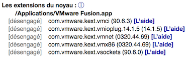 Cette section récupère toutes les extensions de noyau 3e partie. En fait, ces extensions modifient votre système d’exploitation. Ils sont peut-être nécessaires pour la matérielle ou le logiciel que vous souhaitez exécuter. Cependant, parce qu’ils sont profondément ancrés dans le cœur du système d’exploitation, ils peuvent déstabiliser votre système. Le résultat le plus commun de mauvaise conduite des extensions de noyau sont des kernel paniques où «vous devez redémarrer votre machine». -
Éléments de démarrage :
Ces logiciels démarrent avec votre Macintosh. Ils ne fonctionnent plus sur OS X 10.10 «Yosemite». Si vous avez le logiciel ici, vous devez faire contact avec le développeur de ce logiciel et le mettre à jour. -
Agents de lancement systèmes :
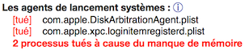 Ce sont toutes les parties de votre système d’exploitation de bas niveau, fourni par Apple, qui marchent cachées. Toute défaillance qui apparaît ici peut indiquer un problème avec votre système. Il peut y avoir une longue liste de processus tués dus à la pression de mémoire. Cela signifie que votre ordinateur a besoin de plus de mémoire vive. -
Daemons de lancement systèmes :
Idem ci-dessus. -
Agents de lancement :
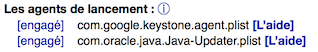 Idem ci-dessus, mais pour le logiciel de tiers. Il est commun pour les logiciels à utiliser des démons de lancement. Toutefois, ce logiciel est toujours en cours d'exécution en arrière-plan. -
Daemons de lancements :
Idem ci-dessus. -
Agents de lancement pour l’utilisateur :
Similaire à ce qui précède. La plus grande différence est que ce logiciel fonctionne sous votre compte utilisateur normal et non en tant que super-utilisateur. Cette section peut contenir des preuves d’escroquerie ou adware. -
Éléments Ouverture :
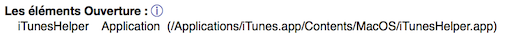 Ce sont les logiciels qui se démarrent aussitôt que vous faites une connexion au ordinateur. S’il y en a beaucoup, vous pouvez manquer de mémoire ou votre machine peut marcher lentement. -
Autres logiciels :
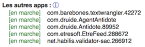 Il y a beaucoup de logiciels qui sont lancés en cas de besoin. Parfois, ce sont les aides, les éléments ouvertures modernes, ou presque de rien d’autre. S‘ils sont cachés, EtreCheck les affiche ici. -
Plug-ins internets :
Ces articles pourraient influer sur votre navigation sur le Web. -
Extensions de Safari :
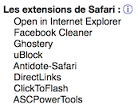 Ces articles pourraient influer sur votre navigation sur le Web. -
Time Machine:
Il est essentiel d’avoir une bonne sauvegarde. Tous les utilisateurs de Mac devraient être en cours d’exécution de Time Machine. -
L’utilisation du CPU par processus :
Ce sont les tâches qui utilisent actuellement la majorité de votre capacité de traitement. -
L’utilisation de la mémoire par processus :
Idem, mais pour l’utilisation de la mémoire. -
Informations de la mémoire virtuelle :
Malheureusement, comme de Mac OS X "Yosemite" et, plus tard, cette section a peu de valeur. OS X tente d’utiliser la totalité de votre mémoire vive de sorte que vous devriez avoir très peu de la mémoire vive libre. OS X "Yosemite" et plus tard peuvent effectuer mal sur des machines avec seulement 4 Go. Les anciennes machines avec seulement 4 Go de la mémoire vive et un vieux disque dur peuvent fonctionner particulièrement mauvaise sur OS X "Yosemite" et plus tard. -
Informations du diagnostic :
Fichiers de diagnostic récents générés par votre système. EtreCheck comprend crash, hang, et les rapports de CPU pour les trois derniers jours. Tous les rapports de panique de noyau sont également inclus, ainsi que vos plus récents résultats d‘examen de soi. Pour de meilleurs résultats, exécutez EtreCheck comme un utilisateur administrateur (c’est le réglage par défaut).